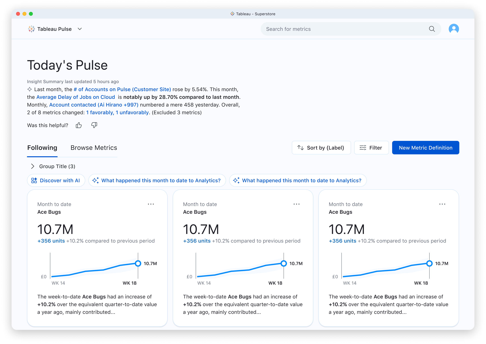
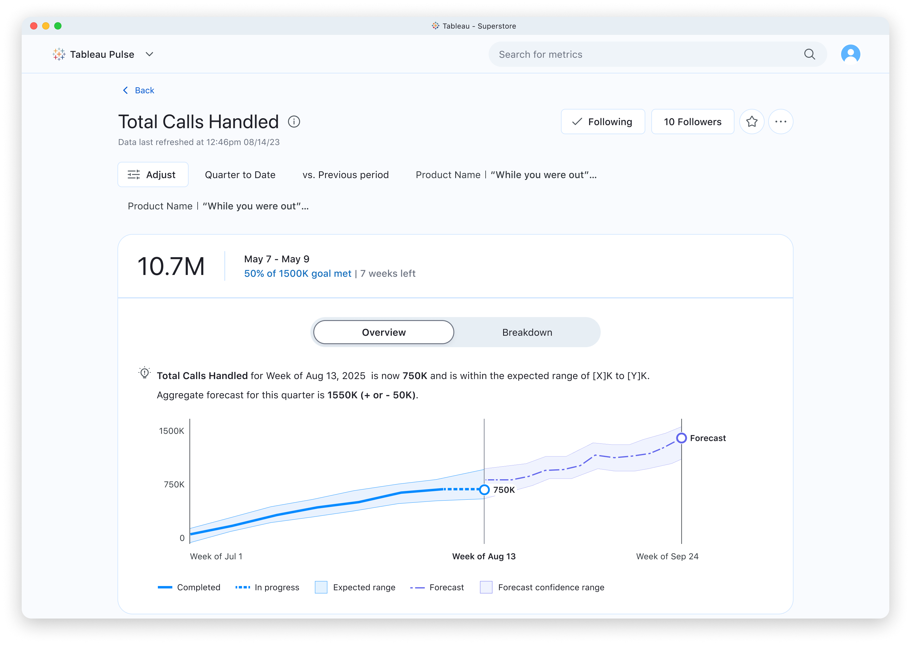
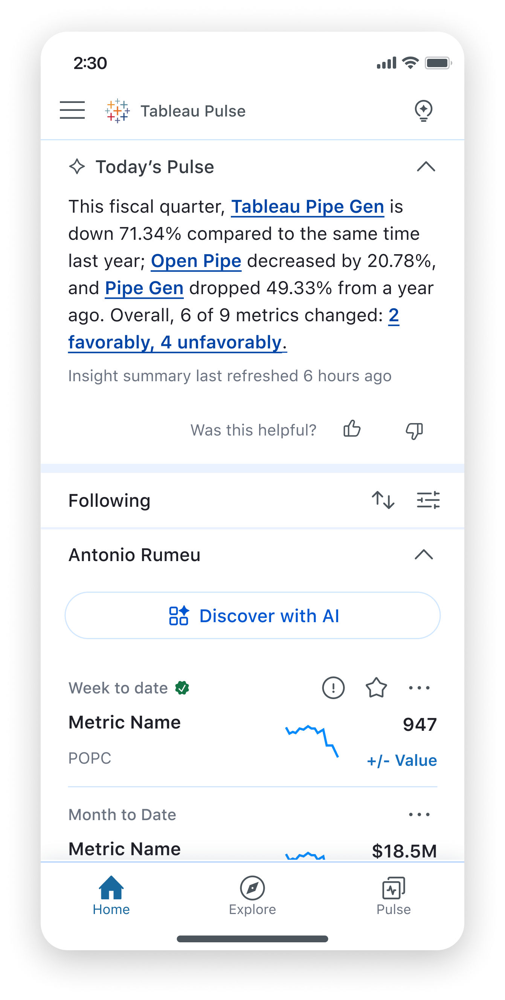
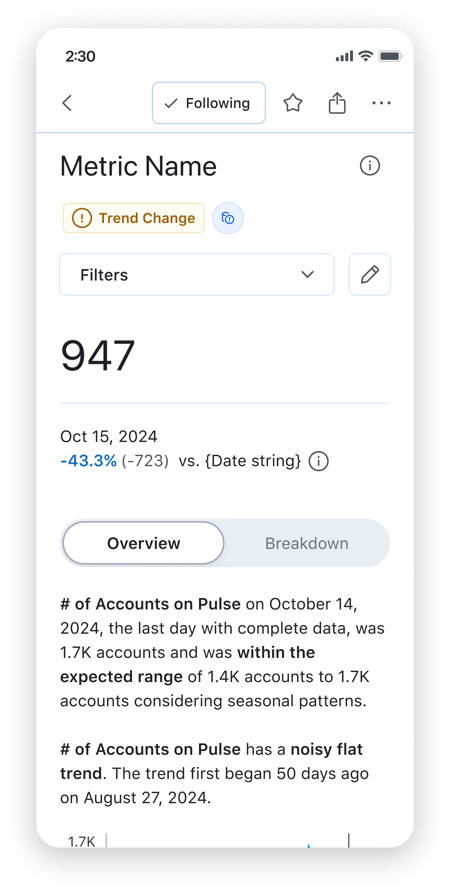
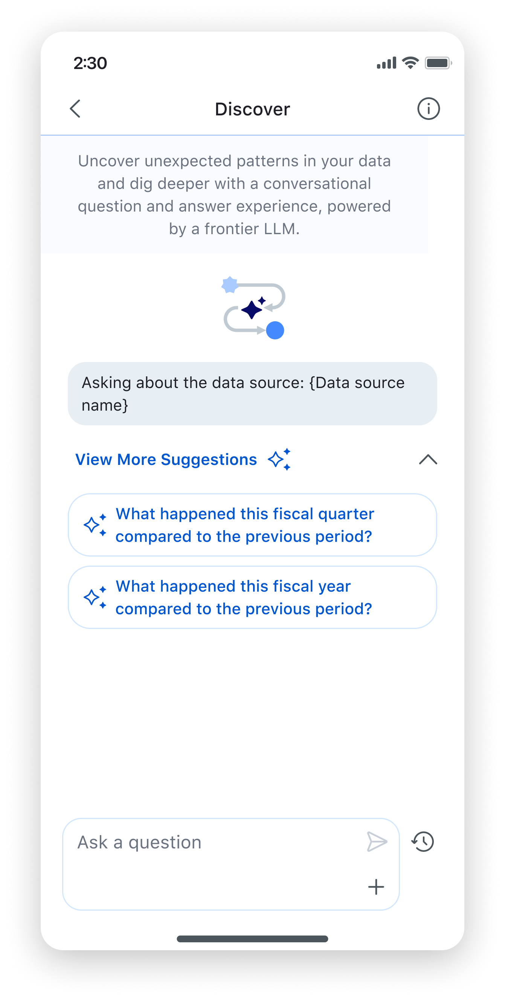
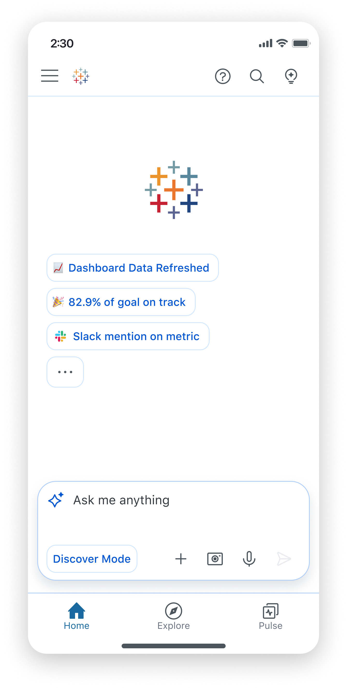
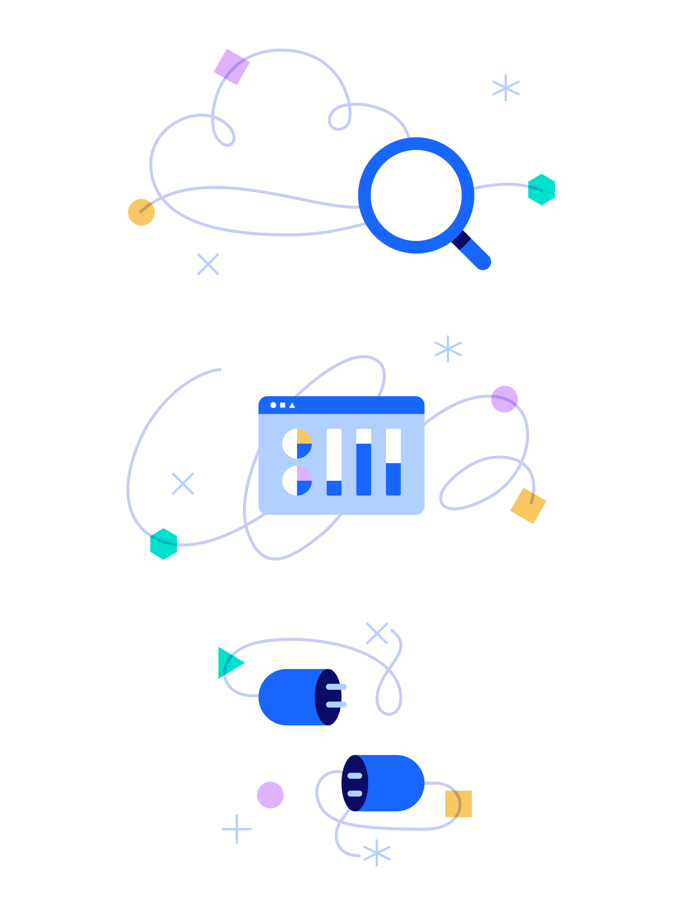
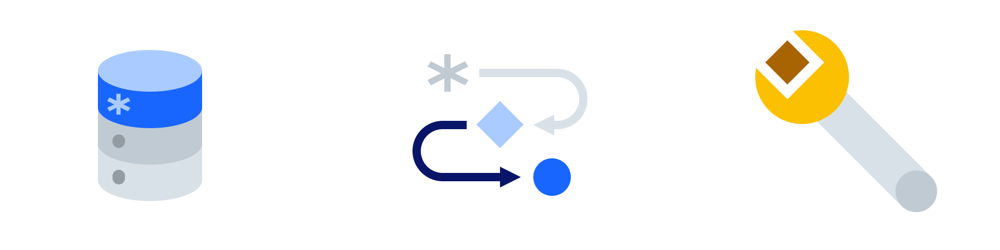
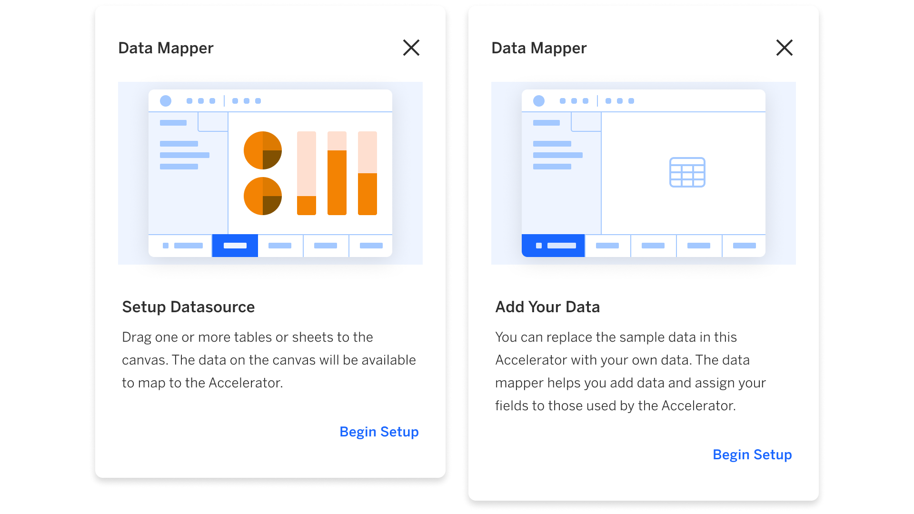

Product / Visual Designer
Tableau / Salesforce
Lead on Tableau Pulse Mobile experiences. I supported the Tableau Pulse product (mobile & desktop) with the creation of new in-product illustrations, components and addressing accessibility. Collaborated with product, engineering, and technical writers to deliver end-to-end experiences.
Lead on the creation of In-Product illustrations and the pulse UI kit for Tableau Pulse. Support the Tableau Core experiences.
Selected Projects∎
Tableau
Tableau is a business intelligence software, It transforms raw data into interactive dashboards, charts, and automated insights
Tableau Pulse
Tableau Pulse is an AI-powered experience built on Tableau Cloud that delivers personalized, contextual insights directly into your daily workflow (email, desktop, mobile). It empowers users to track key metrics, understand why data changes occur, and collaborate with their teams via natural language summaries.
We help people with their journey to see and understand data
The Challenge
In collaboration with stakeholders (directors, product managers, engineering and technical writers) we helped define a new product experience that is delightful, modern and drives at our mission statement.
We developed a Ui kit for Pulse. It was focused on long term use, theming, and accessibility.
We also developed mobile first principles.
We established a working relationship with development on iteration process. It helped develop complex components and experiences.
Tableau Pulse / Cloud Desktop


Tableau Mobile App


Tableau Mobile App / Discover

Agent Concepts
How do we think about the future of analytics and agentic experiences?
We start by exploring how change the way users see analytics with an assitant to help understand data. We think of ease of use and delight.
We are not all analytic professionals so, simplify the complex into bite sized experiences that are familiar with.

In Product Illustrations
Data is all around us. It touches everyone, everywhere.
Our illustrations are simple, confident, approachable and vibrant, they connect with everyone and everywhere to understand data in a more human way.
We guide our users through their journey, we understand that our users have different levels of comprehension so,illustrations support, assist and reinforce messaging giving users the ability to see and understand data
Our illustrations are experts in their field which connect users in a more delightful experience that people love.
Empty State Illo
Empty States are opportunities to build educate, explain what went wrong or delight the user. These are larger illustrations see examples to the right to the bottom

Spot Illo
Spot illustration components complement the content and amplify the message to help users quickly grasp how the product works. No larger than 96px.

Simple UI
These are the simplest way to enforce usage or feature by creating a UI devoid of copy or icons

Outcome
At Tableau from Salesforce, I joined the visual design team then joined experience design team to support our mobile experiences. I worked closely with the product and design leaders to drive design experiences that puts users first. I execute on high level deliverables, such as, high fidelity prototypes, early design concepts, or blue sky concepts that drive conversations.
I'm happy to work with Tableau Pulse team and I support other Tableau initiatives by giving feedback or lending my expertise.I continue to lead design initiatives for our team.
I worked closely with PM and DEV leads to continually discover and iterate on our use cases balancing the needs of users and aligning with business goals.
© 2006-2017 Jose Ramirez Calamateo. All rights reserved.
Unless otherwise indicated, all materials on this pages are copyrighted.
Designed & Built by Jose Ramirez Calamateo. Updated June 8, 2017,
Remember to refresh.